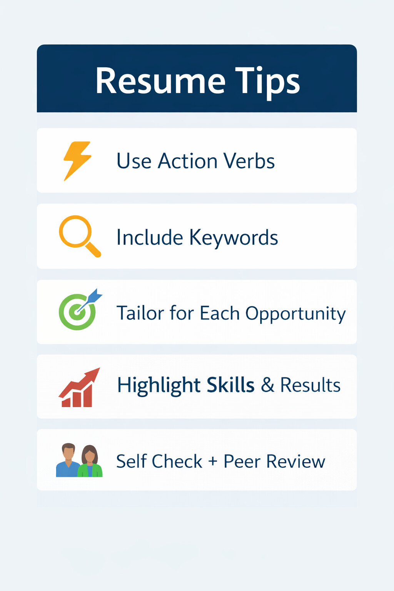

Resume Resources
Your resume is often the first thing an employer sees, so it should quickly communicate your strengths, skills, and experience. Whether you are building your first resume or revising an existing draft, this page is designed to help you create a document that is clear, relevant, and easy to scan.
UMSI students prepare for many different paths, including UX, product, research, data, libraries, and information careers. A strong resume helps you connect your coursework, projects, internships, and campus experiences to the roles you want next.
If you want more personalized help, you can talk to a CDO Career Coach for feedback on your materials.
Quick Start: 5 Steps to Improve Your Resume
- Choose a clear format: use a clean layout that is easy for employers to scan.
- List your relevant experience: include jobs, internships, coursework, projects, and leadership roles.
- Strengthen your bullets: start with action verbs and explain what you accomplished.
- Tailor for each role: adjust your content so it matches the position you are applying for.
- Review carefully: proofread and ask for feedback before submitting.

What Employers Look For
Employers usually want resumes that are specific, easy to read, and relevant to the role. A strong resume does not only list responsibilities. It shows what you did, how you did it, and why it mattered.
Most Helpful Resume Resources
- UMSI Resume Guide and Rubric — guidance on resume structure, formatting, and sample accomplishment bullets.
- Writing Effective Resume Bullets — tips for writing stronger, more specific bullet points.
- Resume Rubric — criteria you can use to review your own draft before submitting applications.
- Application Materials Support — coaching, workshops, and resume support through the CDO.
Ready for feedback? Book a resume review appointment with a CDO Career Coach .
Resume FAQ

- How long should my resume be? For most UMSI students and recent graduates, one page is the strongest choice.
- Should I change my resume for each application? Yes. Tailoring your resume helps show that your background matches the role.
- Can I include coursework or class projects? Yes. Relevant projects are often important evidence of your skills.
- How often should I update my resume? Update it each semester or whenever you complete a major project, role, or accomplishment.
Quick Actions: What to Do This Week
If you only have 30 to 60 minutes, these smaller tasks can still improve your resume in a meaningful way.
- Choose one target role: pick one job posting and review what the employer is asking for.
- Rewrite three bullets: revise them using action, method, and result.
- Add relevant keywords: include tools, methods, and skills only when they accurately reflect your experience.
- Proofread out loud: this helps catch grammar issues, awkward wording, and missing details.
How to Tailor Your Resume to a Job Posting
A strong resume is not one-size-fits-all. Tailoring means emphasizing the parts of your background that best match the priorities of a specific role.
Step 1: Highlight Keywords
Look for repeated tools, responsibilities, and required skills in the job posting.
Step 2: Match Your Evidence
Revise your bullets so your experiences clearly show those skills or responsibilities.
Step 3: Reorder for Relevance
Move the most relevant projects, experiences, or sections closer to the top of the page.
Keywords Common in UMSI-Related Roles
- User research, usability testing, interviews, surveys, synthesis
- Wireframes, prototypes, Figma, interaction design, information architecture
- SQL, Python, data cleaning, dashboards, analysis, A/B testing
- Stakeholder communication, requirements, collaboration, documentation
Build Stronger Resume Bullets
Simple Formula
A useful bullet often follows this pattern: action + what you did + result or value.
Example: “Conducted usability testing with 8 participants and synthesized findings into 5 design recommendations.”
What Makes a Bullet Stronger
- Starts with a specific action verb
- Explains the task or method clearly
- Shows impact, results, or purpose when possible
- Avoids vague wording like “helped with” or “responsible for”
Action Verbs by Category
Starting each bullet with a clear verb can make your work sound more specific and more professional.
Research & UX
Conducted, interviewed, observed, synthesized, evaluated, tested, analyzed
Data & Analytics
Cleaned, queried, modeled, visualized, automated, validated, optimized
Product & Collaboration
Collaborated, coordinated, facilitated, documented, aligned, presented, delivered
Resume Review Plan
It is easier to get useful feedback when your draft is already organized and close to complete.
- Self-check: confirm your formatting is consistent and your bullets show clear evidence.
- Peer review: ask a classmate or friend to check clarity and readability.
- Career coach review: bring your tailored resume and the job posting to the appointment.
Bring These to Your Review
- The job posting link or copied description
- Your current resume as a PDF
- Two or three questions you want answered
Common Resume Problems to Fix
- Too general: add tools, methods, and outcomes whenever possible.
- Weak bullets: replace vague phrasing with clearer action verbs and evidence.
- Hard to scan: shorten long bullets and keep formatting consistent.
- Missing projects: include relevant class, volunteer, or personal work when appropriate.